株式会社 アイプランニング
Towa Edogawabashi building 8F
Yamabuki-cho 347
Shinjuku-ku Tokyo
Phone: 03-5225-1147
Subversion（サブバージョン）はプログラムのソースコードなどを管理するバージョン管理システムの一つです。
今回はSubversion + Eclipse + Subclipsenについて解説します。
§１．Subversion導入方法
Subversion用リポジトリを作成しましょう。
＜導入方法＞
・TortoiseSVNの導入
エクスプローラからSubversionを扱えるツールです。
以下アドレスより、TortoiseSVNをダウンロードし、インストールしてください。
http://tortoisesvn.net/downloads
※インストール後再起動が必要です。
（日本語化については以下のサイトが詳しいです。）
http://chain.main.jp/sb/2006/05/tortoisesvn_4.html
・リポジトリの作成とインポート
まず、リポジトリを作成します。（ここでは、例として、「D:\repository\svn」に作成します。）
フォルダを作成し、右クリックして「ここにリポジトリを作成」を選択します。
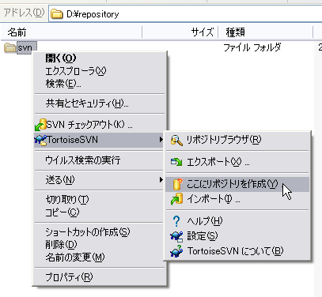
ファイルシステムはNative File systemを選択してください。
これでリポジトリが作成できました。
リポジトリの中にはまだ何もファイルが入っていませんので、
ソースファイルのインポートを行います。
格納したいファイルを適当なフォルダ内にまとめてください。
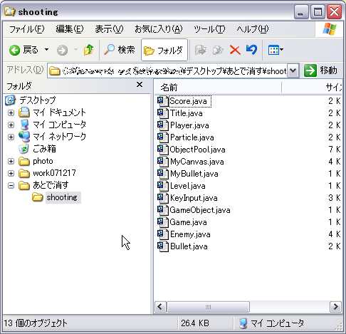
作ったフォルダのルートを選択し、
インポートを選択します。
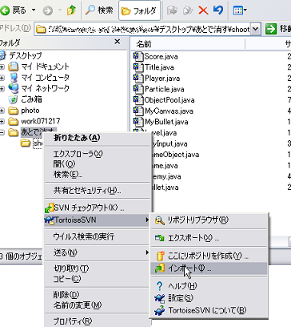
リポジトリのURLには、先ほど作成したリポジトリを指定します。
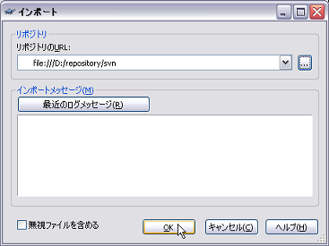
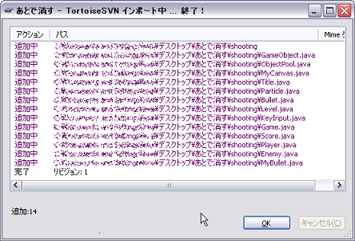
これでリポジトリ内にファイルがコピーされました。
コピー元フォルダは削除してかまいません。
コピーされたか、リポジトリブラウザで確認してみましょう。
エクスプローラの右クリックメニューを開き（どこでもいいです）
リポジトリブラウザを選択します。
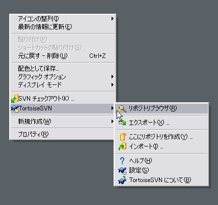
先ほど作成したリポジトリを指定します。
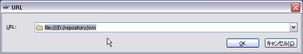
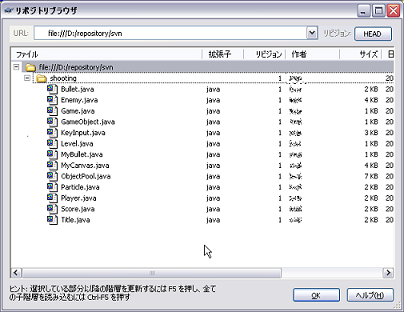
リポジトリ内にファイルがコピーされているのが確認できました。
なお、リポジトリブラウザ上ではリポジトリ内のファイルのコピー、リネーム、削除などを行うことができます。
・リポジトリからソースファイルの取得
ソース出力先フォルダ（例としてfirstSVNとします）を作成し、チェックアウトを行ってください。
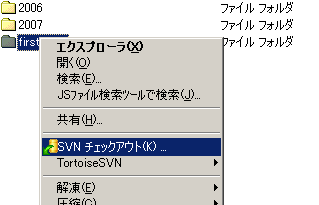
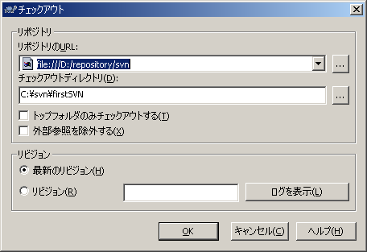
以上でSubversionを使用する準備が整いました。
§２．Eclipseから利用する
・Subclipseの導入
EclipseからSVNを利用できるようにするには、以下の方法でSubclipseを導入してください。
ヘルプ→ソフトウェア更新→検索とインストール→新規→新規リモートサイト に以下のアドレスを追加してください
http://subclipse.tigris.org/update_1.0.x
ソフトウェア更新にて、現在お使いのEclipseに
適合したバージョンのSubclipseを取得してください。
・プロジェクトの作成
新規Javaプロジェクト→外部ソースからプロジェクトを作成を選択し、
先ほど作成したソース出力先フォルダ（例としてfirstSVNとします）を選択してください。
自動的にSubversionの設定がなされます。
（この方法以外では、パッケージが表示されないなどうまくプロジェクトが作成できませんでした）
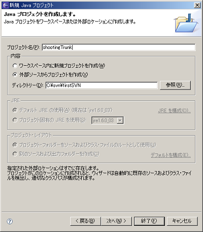
以降は通常通りプロジェクトの設定を完了してください。
これで設定は完了です。
§３．開発の作業例
▼３−１． Subversionを使った開発のフロー
1)作業前に「更新」して最新のソースを取得してください
2)ファイルが増えた場合「追加」してください。
追加後はコミットする必要があります。
3)作業がひと段落したらコミット
更新分を適用します。
・更新について
作業前に、ほかの人がソースを変更しているかもしれないので、
その更新をリポジトリから取得します。
リポジトリから取得した修正が自分の編集している部分と衝突する場合、マージを要求されます。
Eclipse上ではパッケージを右クリック→チーム→更新（下図）
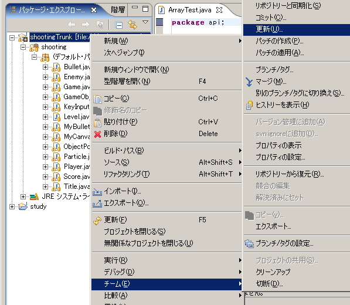
・追加について
新しく増えたファイルは「追加」を行うことで、バージョン管理下に置かれます。
追加をしただけではリポジトリにはまだ保管されていませんので、追加後に適宜コミットを行ってください。
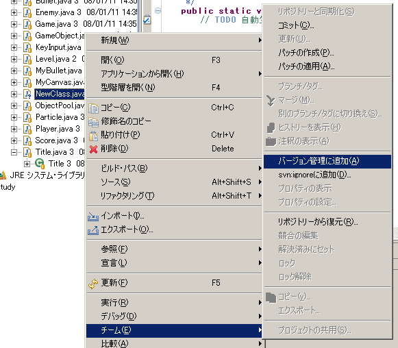
・コミットについて
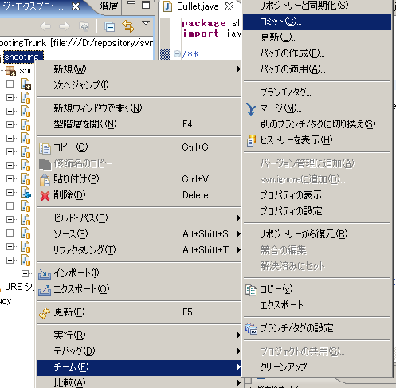
ソースの修正が一段落したら、修正分をリポジトリに保管します。
Subversionでは、コミット毎にリビジョン番号が一つずつ増える仕組みになっています。
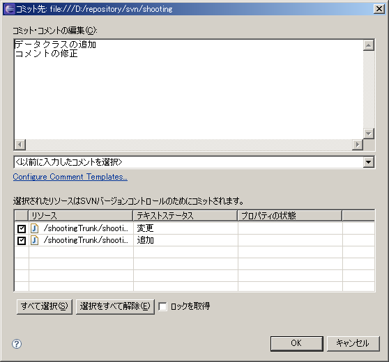
コミット時には、更新内容をなるべく書くようにします。
▼３−２．マージ
・競合の解消
「更新」を行ったとき、
ローカルにある作業コピーと、リポジトリの最新から取得したファイルとの間で、
更新部分の競合が起こることがあります。
Eclipse上では以下のような出力になります：
update -r HEAD C:/svn/firstSVN/shooting
C C:/svn/firstSVN/shooting/shooting/Title.java
Updated to revision 5.
===== File Statistics: =====
Conflicts: 1
ソースを開くと以下のようになっています。
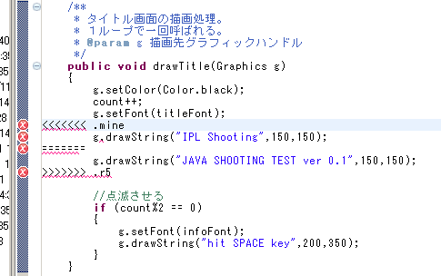
g.drawString("IPL Shooting", 150, 150);
はこちらの作業コピーで行った修正です。
g.drawString("JAVA SHOOTING TEST ver 0.1", 150, 150);
は、リポジトリにコミットされた修正です。
作業コピーと、リポジトリから取得した差分の編集範囲が重なっているので、
「衝突(Conflict)」が発生します。
Subclipse側で、衝突の発生した箇所は、わざとエラーになるようにコードを生成するようです。
手作業で衝突部分を解消し、衝突したファイルを チーム＞解決済みにセット してください。
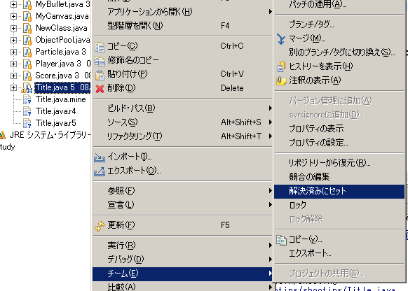
▼３−３．ブランチの作成
大規模な変更を行うとき、
ブランチを作成することで、ほかのモジュールに影響を及ぼさずに編集を行うことができます。
例では、iwaiというブランチを作成します。
チーム＞ブランチからブランチを作成します。
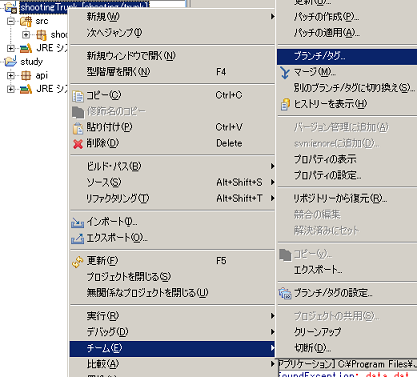
branches以下に好きなフォルダ名でブランチを作ります。
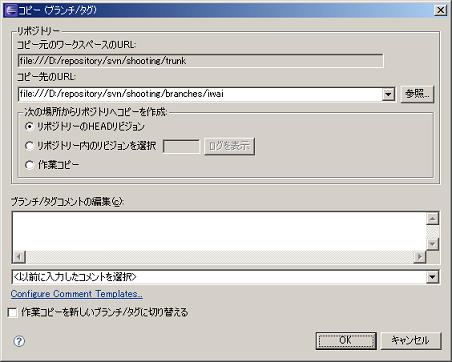
以上でブランチの作成は終了です。
続いて、プロジェクトのSVN参照先を変更します。
プロジェクトを右クリックし、チーム＞別のブランチ/タグに切り替えを選択します。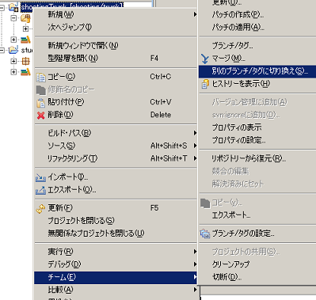
先ほど作成したブランチを指定します。
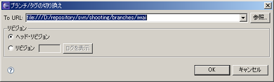
これで先ほど作成したブランチから更新 /
コミットができるようになりました。
▼３−４．ブランチのマージ
ブランチによって別に管理していたソースを、
本流に合流させるには、「マージ」を行います。
trunkから分岐したブランチAを作成しており、
ブランチAへの修正のうち、リビジョン29〜30で行われた変更を本流にマージしたい場合を例とします。
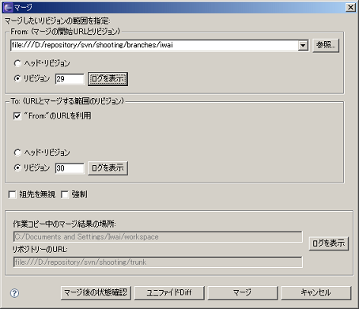
リビジョン29から30の間に行われた修正を取得したい場合の設定です。
ブランチでの変更が、trunk側の作業コピーにマージされます。
マージ結果を確認して正しいようならコミットします。
（「マージ後の状態確認」は、2008/01/11現在、正常に動かないようです。）
以上です。
アイプランニング技術情報
技術情報TOPページ
Subversionを使う利点
・AさんとBさんの更新部分が競合しており、間違ってAさんの更新部分のみをマスターに上書きしてしまった。
・ファイルの更新日が何かのきっかけで変更されてしまい、どれが最新のソースなのかわからなくなってしまった。
・バックアップのとり忘れ
・トラブルがあったとき、誰がいつ編集した部分なのかわからない。
そこで、バージョン管理システム(VCSまたはSCM)を使うと、手作業よりも安全に版数管理を行うことができます。
バージョン管理システムには、以下のような利点があります。
・ソースファイルの変更を記録し、管理できる。
→そのソースの修正が、いつ誰によって行われたかを追跡することができます。
→ソースを変更前に戻したり、さらに前のバージョンへも戻すことができます。
・同一のソースファイルに関して、複数の開発者が平行して変更を行える。
→変更の競合を検出し、ソースを統合することができます。
用語辞書
■バージョン管理システム（ＶＣＳ）
プログラムのソースコードなどを
管理するシステム
履歴管理や複数人数での
開発のための機能を持つ
■リポジトリ
貯蔵庫の意。Subversionがファイル
と履歴を格納する特殊なフォルダ
■チェックアウト
リポジトリからファイルを取得し作
業フォルダを作る
■作業フォルダ
ローカルのソースコードを置いて作
業するフォルダ
■更新
作業フォルダにあるファイルを、サ
ーバにある最新版に置き換えること
■コミット
ローカルで編集したソースの修正を
リポジトリに反映させること
■ブランチ
ソース管理を分岐させる
■マージ
ブランチで行われた変更を適用する
参考サイト
プログラマ募集中・・・
お客さまの立場に立ってモノが作れる判断力、企画力、コンサルティング能力を磨きたくはありませんか？プログラム能力は、プロジェクトを通じて自然と能力があがるようなシステムになっています。初心者プログラマであっても３年程度で、その能力は初心者だったとは思えないくらいのスキルとなっています。
これは、「最初は誰でも初心者だ」という教育方針があるため、また、多くの社員が入社して初めてプログラミングにふれたという経験があるために自分のつまづき体験や、成功体験を含めた教育がなされているからなのです。
このようにアイプランニングでは、社員１人ひとりの個性と人間性を重視し、スキルにあったマンツーマン教育であなたを一人前のエンジニアへと成長させていきます。 それは誠実なスタッフが集まっているからこそ、どんなお客様からも信頼される企業に成長できるから。私たちはそう考えています。
プログラマを目指して会社に入ったものの、思った通りの仕事をさせてもらえなかったと思っている人、教育システムが十分でなかったためにスキルが身に付いていないと思っている人も気軽にご応募ください。パソコンのスキルに自信のない方でも、マンツーマンの研修制度で一人前に成長できるフィールドを整えておりますので安心してご応募くださいね。
知識だけでなく本当の開発力が身につく環境でのシステム開発でみつかる『やりがい』はもちろん、プライベートでも今までになかった充実感が得られますよ。